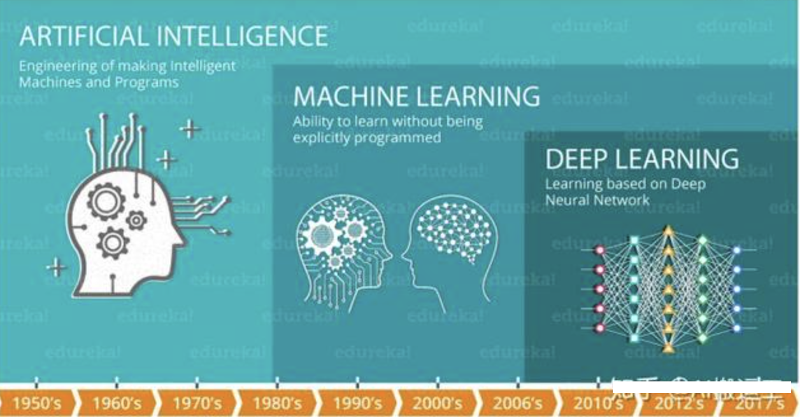
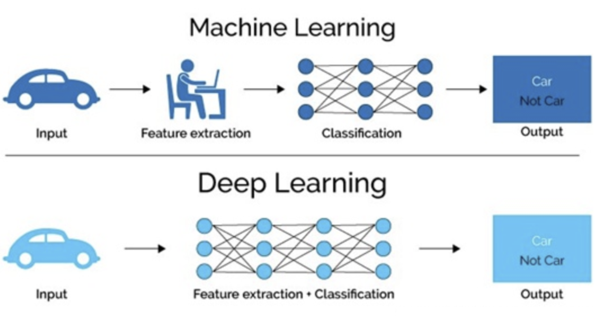

1 深度学习¶
学习目标¶
- 知道深度学习概念
- 了解深度学习历史
1 什么是深度学习¶
在介绍深度学习之前，我们先看下人工智能，机器学习和深度学习之间的关系：

机器学习是实现人工智能的一种途径，深度学习是机器学习的一个子集，也就是说深度学习是实现机器学习的一种方法。与机器学习算法的主要区别如下图所示：

传统机器学习算术依赖人工设计特征，并进行特征提取，而深度学习方法不需要人工，而是依赖算法自动提取特征。深度学习模仿人类大脑的运行方式，从经验中学习获取知识。这也是深度学习被看做黑盒子，可解释性差的原因。
随着计算机软硬件的飞速发展，现阶段通过深度学习来模拟人脑来解释数据，包括图像，文本，音频等内容。目前深度学习的主要应用领域有：
- 语音识别
- 机器翻译
- 自动驾驶
当然在其他领域也能见到深度学习的身影，比如风控，安防，智能零售，医疗领域，推荐系统等。
2 发展历史（了解）¶
深度学习其实并不是新的事物，深度学习所需要的神经网络技术起源于20世纪50年代，叫做感知机。当时也通常使用单层感知机，尽管结构简单，但是能够解决复杂的问题。后来感知机被证明存在严重的问题，因为只能学习线性可分函数，连简单的异或(XOR)等线性不可分问题都无能为力，1969年Marvin Minsky写了一本叫做《Perceptrons》的书，他提出了著名的两个观点：1.单层感知机没用，我们需要多层感知机来解决复杂问题 2.没有有效的训练算法。
20世纪80年代末期，用于人工神经网络的反向传播算法（也叫Back Propagation算法或者BP算法）的发明，给机器学习带来了希望，掀起了基于统计模型的机器学习热潮。这个热潮一直持续到今天。人们发现，利用BP算法可以让一个人工神经网络模型从大量训练样本中学习统计规律，从而对未知事件做预测。这种基于统计的机器学习方法比起过去基于人工规则的系统，在很多方面显出优越性。这个时候的人工神经网络，虽也被称作多层感知机（Multi-layer Perceptron），但实际是种只含有一层隐层节点的浅层模型。
2006年，杰弗里·辛顿以及他的学生鲁斯兰·萨拉赫丁诺夫正式提出了深度学习的概念。
2012年，在著名的ImageNet图像识别大赛中，杰弗里·辛顿领导的小组采用深度学习模型AlexNet一举夺冠。AlexNet采用ReLU激活函数，从根本上解决了梯度消失问题，并采用GPU极大的提高了模型的运算速度。
同年，由斯坦福大学著名的吴恩达教授和世界顶尖计算机专家Jeff Dean共同主导的深度神经网络——DNN技术在图像识别领域取得了惊人的成绩，在ImageNet评测中成功的把错误率从26％降低到了15％。深度学习算法在世界大赛的脱颖而出，也再一次吸引了学术界和工业界对于深度学习领域的关注。
2016年，随着谷歌公司基于深度学习开发的AlphaGo以4:1的比分战胜了国际顶尖围棋高手李世石，深度学习的热度一时无两。后来，AlphaGo又接连和众多世界级围棋高手过招，均取得了完胜。这也证明了在围棋界，基于深度学习技术的机器人已经超越了人类。
2017年，基于强化学习算法的AlphaGo升级版AlphaGo Zero横空出世。其采用“从零开始”、“无师自通”的学习模式，以100:0的比分轻而易举打败了之前的AlphaGo。除了围棋，它还精通国际象棋等其它棋类游戏，可以说是真正的棋类“天才”。此外在这一年，深度学习的相关算法在医疗、金融、艺术、无人驾驶等多个领域均取得了显著的成果。所以，也有专家把2017年看作是深度学习甚至是人工智能发展最为突飞猛进的一年。
2019年，基于Transformer 的自然语言模型的持续增长和扩散，这是一种语言建模神经网络模型，可以在几乎所有任务上提高NLP的质量。Google甚至将其用作相关性的主要信号之一，这是多年来最重要的更新。
2020年，深度学习扩展到更多的应用场景，比如积水识别，路面塌陷等，而且疫情期间，在智能外呼系统，人群测温系统，口罩人脸识别等都有深度学习的应用。
3 小结¶
本小节简单带着大家了解了下深度学习应用场景、以及发展历史。从本小节中，同学们应该能够感受深度学习目前是实现人工智能的一种非常有力的方法。